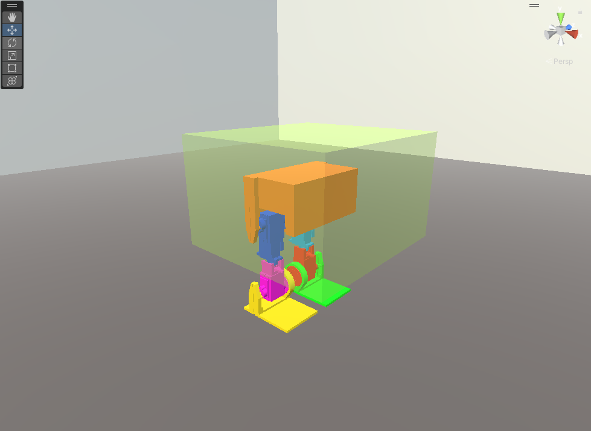

[PREFACE]
When I was a kid, I loved Star Wars, especially the droids. Seeing how modern robotics is evolving, I wanted to build something of my own. Inspired by BD-1 from *Star Wars: The Fallen Order*, I began designing a bipedal robot.
[CAD_DESIGN]
After several iterations in Fusion360, I finalized the design.
[SIMULATION]
The model was imported into a physics simulation to test its movement and stability.
[TRAINING]
The robot's movement was refined using reinforcement learning. After many iterations, it finally took its first steps.
[CHALLENGES_&_LESSONS]
Building this robot exposed me to many challenges, from hardware constraints to reinforcement learning quirks. It inspired me to dive deeper into AI and robotics. You will notice the robot was unable to REALLY walk; this was merely the first sign of convergence.
[FUTURE_WORK]
This is just the beginning. I plan to refine the hardware, improve control algorithms, and enhance the walking motion. Unfortunately, this current version is unable to walk in it's physical form. I need motors with a stronger torque, which are surprisingly expensive.